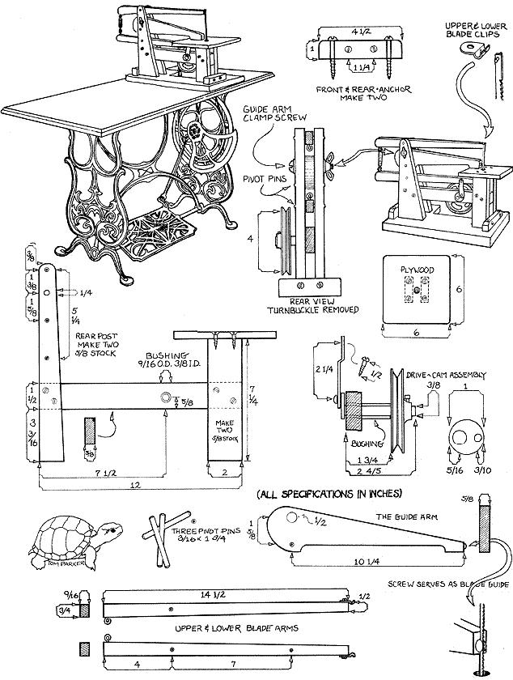

As handy as the things are, electric jigsaws-at least cheap ones-can be pretty obnoxious to use. They're awfully noisy, and because they tend to vibrate a good bit they lack the intimate "feel" of a quality tool.
Here, to remedy the situation, is my set of plans for a wooden jigsaw that you can power with your foot while you work to the rhythmic snik-snik-snik of a sewing machine treadle.
Treadle sewing machines have to be one of the finest bargains around. I paid a junk dealer just $15.00 for an old Domestic in perfect condition. The frame and treadle are lovely, ornate castings with a beautiful finish . . . and the hefty flywheel makes for flawlessly smooth operation. Best of all, in most cases a treadle can be used "as is", so that you can actually switch back and forth between sawing and sawing.
(For an even greater bargain in treadle sewing machines, try the local dumps. While / was still located up north, a couple of my staff members found not one, not two, but three perfectly good footpowered machines-among many other goodies!-on a single half-hour forage through the Madison, Ohio municipal dumping grounds.-MOTHER.)
The jigsaw blade moves up and down by means of a cam/ tie-rod/pulley combination that converts the rotary motion of the flywheel to a reciprocating motion.
The upper pulley shaft rotates in a snug little bushing which has been pressed through a hole in the cross frame. On the end of the shaft opposite the pulley is the small cam disc (see the drive-cam assembly illustration on the preceding page) that translates the rotational motion of the pulley to an up-and-down motion of the saw. About the most difficult procedure in the jigsaw's entire construction is getting this tiny disc brazed to the end of the horizontal shaft, and after that, brazing a small pin to the disc. If you don't weld, hunt up a friend who does . . . or explain your needs to a local welding shop.
You could try to rig a similar component with bolt-together hardware. If you do, just keep the same dimensions, and remember: this is the heart of the machine . . . any slop you introduce here will surely come back to haunt you later.
While you're metalworking, see if you can find some steel rod for the pivot pins and go ahead and fashion the little blade clips. You'll want to use a fairly resilient metal for the clips since the easier they are to work into shape, the quicker they bond out of shape during use.
Find some docent hardwood. (Hock up an old desk or something.) It's important that the reciprocating blade arms be strong . . . yet light enough to keep from shaking the whole machine as it operates. And note the pleasing toper of the wooden arms. Aside from cosmetic value, this serves to keep their fast-moving tips as light as possible.
Everything except the small plywood "table" and the blade arms can be cut from 5/8" stock. (The blade arms need to be slightly thinner so that they'll move freely between the vertical posts that hold them.) Pre-drill the frame members and assemble them with wood screws.
Please. Don't just construct the jigsaw, craft it. The pivot pins should, ideally, squeak into their holes. The upright posts should really match. Square ends should be perfectly square.
Take your time. Go slowly. It'll make the difference between a quality jigsaw that lasts . . . and a self-destructing pile of wood.
Carefully align the jigsaw pulley with the treadle pulley. The original leather treadle belt-shortened to fit-will work nicely. Just don't make the belt too tight or the saw will bog down.
The turnbuckle at the rear of the blade arms should be adjusted to the proper blade size (five inches) and cinched up. When in use, the guide arm adjusts-via a bolt and wing nut-to the thickness of the wood or whatever you're cutting. It'll also prevent your work from riding up on the blade.
While not intended for heavy-duty jobs, this little jigsaw will do an impressive job when handled with some patience and finesse. And best of all, it's fun to use. You'll find it hard to pass by the machine without stopping for a "quick spin" . . . even when you have nothing to out!
|
|
 |
|